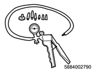

A typical common rail system is comprised of the following 2 fuel pressure sections. A suction side between the fuel tank and the fuel supply pump, and a high-pressure side between the fuel supply pump and the injectors.
Fuel is drawn from the fuel tank and then pumped into the common rail by two plungers, all of which are internal to the fuel supply pump.
The high pressure is regulated by the ECM using the suction control valve depending on values from the one fuel rail pressure sensor attached to the common rail.
If the common rail pressure becomes excessive, the common rail pressure limiter valve opens to release excessive pressure and return the fuel into the fuel tank.
Use the fuel system check, the service technician performs the appropriate fuel system check.
The fuel system check assumes the following conditions are met:
The battery is completely charged and terminals are cleaned and tight.
The engine cranking speed is normal.
There is adequate fuel in the fuel tank.
There is no air in the fuel line.
Fuse and slow blow fuse are normal.
Note
1. Diagnostic system check
Refer to "202.Description Engine 15C.Functional Inspection(4JK1) diagnostic system check-engine controls".
2. DTC verification
Install a scan tool.
Turn OFF the ignition switch for 30 seconds.
Turn ON the ignition switch.
Observe the DTC information with a scan tool.
If a DTC is set, diagnose the applicable DTC.
If a DTC is not set, go to Inspection of injector 1.
3. Inspection 1 of injector
Perform the Injector Force Drive with a scan tool.
Command each injector ON, and verify that the operating sound of the solenoid is heard.
If you cannot hear an operating sound or can hear abnormal sounds, go to the applicable cylinder injector replacement.
If you can hear the operating sound of all the injectors, go to Inspection of fuel.
4. Inspection of fuel
Verify that the fuel tank has enough fuel, and refill as necessary.
Take a fuel sample and verify that the quality of the fuel is good. Replace the fuel if it is defective. Go to Repair verification.
If the fuel amount and quality is normal, go to Inspection 1 of fuel leakage.
5. Inspection 1 of fuel leakage
Inspect for a fuel leakage in the high pressure side fuel system between the fuel supply pump and the injector, and repair as necessary. The following components may leak to the outside.
Fuel supply pump
Fuel rail
Pressure limiter valve
Fuel rail pressure malfunction
Fuel pipe between the fuel supply pump and the fuel rail
Fuel pipe between the fuel rail and the injector
Sleeve nut of the fuel pipe
Note
After repair completion, go to Repair verification.
If there is no fuel leakage, go to Inspection 1 of suction side fuel line.
6. Inspection 1 of suction side fuel line
Pump the priming pump until it becomes firm. If the priming pump does not become firm, inspect for a fuel leakage between the priming pump and the fuel supply pump, and repair as necessary. Go to Repair verification.
Note
Inspect for incorrect tightening in the fuel system between the fuel tank and the fuel supply pump, for cuts and cracks on the fuel hose, and for a failure in the clamps, and repair as necessary. Go to Repair verification.
Note
If the suction side fuel line is normal, go to Fuel pressure verification.
7. Fuel pressure verification
Start and idle the engine.
Note
Verify that the difference between the Desired Fuel Rail Pressure (FRP) display and the Fuel Rail Pressure (FRP) display is within the specified range on the scan tool.
Standard： 5 MPa { 50.99 kgf/cm2 / 725 psi }
If the reading is within the specified range, the system is normal.
If the reading is outside the specified range, go to Inspection 2 of suction side fuel line.
8. Inspection 2 of suction side fuel line
Turn OFF the ignition switch.
Disconnect the fuel feed hose from the fuel supply pump.
Install the vacuum pump to the fuel feed hose.
Caution

SST: 5-8840-0279-0 - vacuum pump
Operate the vacuum pump to verify that the fuel flows smoothly.
Caution
Note
If the fuel does not flow smoothly, repair the fuel line between the fuel tank and the fuel supply pump. Go to Repair verification.
If the fuel flows smoothly, go to Inspection of fuel supply pump inspection.
9. Inspection of fuel supply pump
Connect the fuel feed hose to the fuel supply pump.
Disconnect all the injector harness connectors in order to disable the fuel injection.
Disconnect the fuel feed hose from the fuel tank.
Caution
Install the vacuum pump between the fuel tank and the disconnected fuel feed hose. Verify that the vacuum pump and the fuel line are securely connected.
SST: 5-8840-0279-0 - vacuum pump
Caution
Crank the engine 3 times while monitoring the gauge on the vacuum pump.
Caution
Specified value: -27 kPa {-0.28 kg/cm2 / 8 inHg / -3.98 psi}
If the negative pressure of the specified value is not drawn, go to Inspection 3 of suction side fuel line.
If the negative pressure of the specified value is drawn, go to Inspection of pressure limiter.
10. Inspection 3 of suction side fuel line
Replace the fuel hose between the fuel supply pump and the fuel filter with a clear hose.
Bleed the air from the fuel system.
Start the engine.
Observe the fuel in the clear hose for one minute with the engine at idle.
If air bubbles are not contained, go to Fuel supply pump replacement.
If many air bubbles are contained, repair the fuel system between the fuel tank and the fuel supply pump. Go to Repair verification.
Note
11. Inspection of pressure limiter
Turn OFF the ignition switch
Verify that all the injector harness connectors are disconnected.
Remove the rubber hose from the injector leak-off pipe.
Remove the leak-off pipe assembly that is connected to the fuel feed pipe and the pressure limiter.
Caution
Start the engine.
Inspect for fuel leakage from the pressure limiter.
Caution
If there is fuel leakage, replace the pressure limiter. Go to Repair verification.
Refer to "1.Engine 1C.Fuel System(4JK1) pressure limiter removal".
Refer to "1.Engine 1C.Fuel System(4JK1) pressure limiter installation".
If there is no fuel leakage, go to Inspection 2 of injector.
12. Inspection 2 of injector
With the engine running, inspect for fuel leakage from each injector assembly leak-off pipe.
Caution
If there is no fuel leakage, go to Inspection 2 of fuel leakage.
If there is an excessive fuel leakage, go to the applicable cylinder injector replacement.
Note
13. Inspection 2 of fuel leakage
Remove each glow plug from the cylinder head assembly.
Refer to "1.Engine 1J.Electrical(4JK1) glow plug removal".
Inspect for fuel leakage into the combustion chamber.
If there is fuel leakage, go to the applicable cylinder injector replacement.
Note
14. Injector replacement
Replace the injector. Go to Repair verification.
Note
Refer to "1.Engine 1C.Fuel System(4JK1) injector removal".
Refer to "1.Engine 1C.Fuel System(4JK1) injector installation".
15. Fuel supply pump replacement
Replace the fuel supply pump. Go to Repair verification.
Note
Refer to "1.Engine 1C.Fuel System(4JK1) fuel supply pump removal".
Refer to "1.Engine 1C.Fuel System(4JK1) fuel supply pump installation".
Refer to "1.Engine 1C.Fuel System(4JK1) fuel filter element removal".
Refer to "1.Engine 1C.Fuel System(4JK1) fuel filter element installation".
16. Repair verification
Reconnect all of the disconnected parts and harness connectors.
Start and idle the engine.
Note
Verify that the difference between the Desired Fuel Rail Pressure (FRP) display and the Fuel Rail Pressure (FRP) display is within the specified range on the scan tool.
Standard： 5 MPa { 50.99 kgf/cm2 / 725 psi }
If the reading is within the specified range, the system is normal.
If the reading is outside the specified range, go to DTC verification.